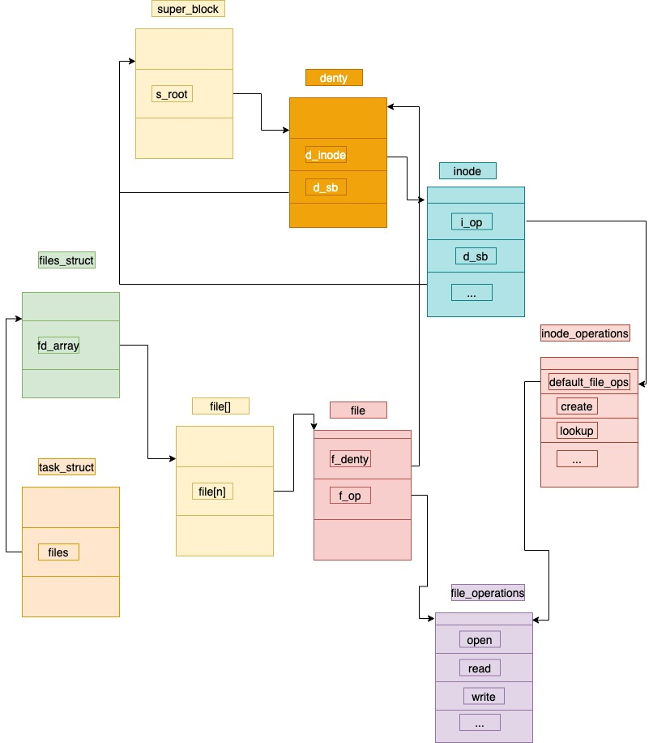

超级块（super_block）、索引节点（inode）、目录结构（dentry） 和 文件结构（file）这几个结构体组成了VFS的核心概念.
一 inode数据结构
- 磁盘上真正的一个文件，在内核中是使用一个inode数据结构表示.
- struct inode 在源码中的位置: include/linux/fs.h:788
- struct inode 整体面貌如下:
struct inode {
struct hlist_node i_hash;
struct list_head i_list; /* backing dev IO list */
struct list_head i_sb_list;
struct list_head i_dentry;
unsigned long i_ino;
atomic_t i_count;
unsigned int i_nlink;
uid_t i_uid;
gid_t i_gid;
dev_t i_rdev;
u64 i_version;
loff_t i_size;
#ifdef __NEED_I_SIZE_ORDERED
seqcount_t i_size_seqcount;
#endif
struct timespec i_atime;
struct timespec i_mtime;
struct timespec i_ctime;
blkcnt_t i_blocks;
unsigned int i_blkbits;
unsigned short i_bytes;
umode_t i_mode;
spinlock_t i_lock; /* i_blocks, i_bytes, maybe i_size */
struct mutex i_mutex;
struct rw_semaphore i_alloc_sem;
const struct inode_operations *i_op;
const struct file_operations *i_fop; /* former ->i_op->default_file_ops */
struct super_block *i_sb;
struct file_lock *i_flock;
struct address_space *i_mapping;
struct address_space i_data;
#ifdef CONFIG_QUOTA
struct dquot *i_dquot[MAXQUOTAS];
#endif
struct list_head i_devices;
union {
struct pipe_inode_info *i_pipe;
struct block_device *i_bdev;
struct cdev *i_cdev;
};
__u32 i_generation;
#ifdef CONFIG_FSNOTIFY
__u32 i_fsnotify_mask; /* all events this inode cares about */
struct hlist_head i_fsnotify_mark_entries; /* fsnotify mark entries */
#endif
#ifdef CONFIG_INOTIFY
struct list_head inotify_watches; /* watches on this inode */
struct mutex inotify_mutex; /* protects the watches list */
#endif
unsigned long i_state;
unsigned long dirtied_when; /* jiffies of first dirtying */
unsigned int i_flags;
atomic_t i_writecount;
#ifdef CONFIG_SECURITY
void *i_security;
#endif
#ifdef CONFIG_FS_POSIX_ACL
struct posix_acl *i_acl;
struct posix_acl *i_default_acl;
#endif
void *i_private; /* fs or device private pointer */
};
- 一些重要的成员含义
unsigned long i_ino; /*inode号码*/
uid_t i_uid; /*用户*/
gid_t i_gid; /*用户组*/
struct timespec i_atime; /*文件的access time*/
struct timespec i_mtime; /*文件的motify time*/
struct timespec i_ctime; /*文件的属性改变的time */
const struct inode_operations *i_op; /*指向和super_block相关的操作，例如删除一个inode,肯定是要更新文件系统的super_block的*/
const struct file_operations *i_fop; /*指向该文件支持的操作，例如往该文件里写数据,是真正的操作磁盘写数据*/
二 dentry
1 目录项的主要作用是方便查找文件。一个路径的各个组成部分，不管是目录还是普通的文件，都是一个目录项对象。如，在路径 /home/hero/example.c 中，目录 /, home/, hero/ 和文件 example.c 都对应一个目录项对象。 2 目录项里有一个 d_inode成员，指向真正的inode
dentry的源码 ,在 include/linux/dcache.h 89行
struct dentry {
atomic_t d_count;
unsigned int d_flags; /* protected by d_lock */
spinlock_t d_lock; /* per dentry lock */
int d_mounted;
struct inode *d_inode; /* Where the name belongs to - NULL is
* negative */
/*
* The next three fields are touched by __d_lookup. Place them here
* so they all fit in a cache line.
*/
struct hlist_node d_hash; /* lookup hash list */
struct dentry *d_parent; /* parent directory */
struct qstr d_name;
struct list_head d_lru; /* LRU list */
/*
* d_child and d_rcu can share memory
*/
union {
struct list_head d_child; /* child of parent list */
struct rcu_head d_rcu;
} d_u;
struct list_head d_subdirs; /* our children */
struct list_head d_alias; /* inode alias list */
unsigned long d_time; /* used by d_revalidate */
const struct dentry_operations *d_op;
struct super_block *d_sb; /* The root of the dentry tree */
void *d_fsdata; /* fs-specific data */
unsigned char d_iname[DNAME_INLINE_LEN_MIN]; /* small names */
};
三 file结构体
- 每当进程打开一个文件,内核返回的是一个file结构体，用于管理被打开的文件
- 文件结构用于描述一个已打开的文件，其包含文件当前的读写偏移量，文件打开模式和文件操作函数列表等
- 进程task_struct 结构体中，有files成员指向files_struct (文件描述符表),files_struct里有fd_array指向一个个file结构体.file结构体里有文件支持的操作函数，例如读、写、文件偏移等. 这些操作函数可以真正的改变文件的内容.
- file结构体里还含有dentry的指针，因此通过file结构体也可以找到具体的inode.
struct file {
/*
* fu_list becomes invalid after file_free is called and queued via
* fu_rcuhead for RCU freeing
*/
union {
struct list_head fu_list;
struct rcu_head fu_rcuhead;
} f_u;
struct path f_path;
#define f_dentry f_path.dentry
#define f_vfsmnt f_path.mnt
const struct file_operations *f_op;
spinlock_t f_lock; /* f_ep_links, f_flags, no IRQ */
atomic_long_t f_count;
unsigned int f_flags;
fmode_t f_mode;
loff_t f_pos;
struct fown_struct f_owner;
const struct cred *f_cred;
struct file_ra_state f_ra;
u64 f_version;
#ifdef CONFIG_SECURITY
void *f_security;
#endif
/* needed for tty driver, and maybe others */
void *private_data;
#ifdef CONFIG_EPOLL
/* Used by fs/eventpoll.c to link all the hooks to this file */
struct list_head f_ep_links;
#endif /* #ifdef CONFIG_EPOLL */
struct address_space *f_mapping;
#ifdef CONFIG_DEBUG_WRITECOUNT
unsigned long f_mnt_write_state;
#endif
#ifndef __GENKSYMS__
struct mutex f_pos_lock;
#endif
};
struct file {}结构体内，有一个struct path成员，该成员的源码如下:
struct path {
struct vfsmount *mnt;
struct dentry *dentry;
};
file结构体和 inode的对应关系:
-
多个file结构体可以指向同一个inode，例如进程A和进程B都打开了同一个文件/home/hero/example.c ,内核会产生2个file结构体
-
进程的FD和file结构体的对应关系:
-
- 一开始是一对一，也可以有多对一的情况
-
- 例如进程A，通过fork()系统调用产生了子进程，那么子进程的FD table默认是复制了父进程的,这个时候进程的FD就对应同一个file结构体了.
-
super_block
Linux支持多文件系统，所以在内核中必须通过一个数据结构来描述具体文件系统的信息和相关的操作等，VFS 定义了一个名为 超级块（super_block） 的数据结构来描述具体的文件系统，也就是说内核是通过超级块来认知具体的文件系统的，一个具体的文件系统会对应一个超级块结构
下面我们介绍一下一些比较重要的成员： - s_dev：用于保存设备的设备号 - s_blocksize：用于保存文件系统的数据块大小（文件系统是以数据块为单位的） - s_type：文件系统的类型（提供了读取设备中文件系统超级块的方法） - s_op：超级块相关的操作列表 - s_root：挂载的根目录
inode数据结构中，有个const struct inode_operations i_op ，用来指向inode本身属性的一些修改， struct super_block i_sb; 则指向该inode对应的super_block. 因此例如删除一个真正的文件(inode)，必须更新其对应super_block信息.
super_block源码
super block 源代码位置
include/linux/fs.h:1424
struct super_block {
struct list_head s_list; /* Keep this first */
dev_t s_dev; /* search index; _not_ kdev_t */
unsigned long s_blocksize;
unsigned char s_blocksize_bits;
unsigned char s_dirt;
loff_t s_maxbytes; /* Max file size */
struct file_system_type *s_type;
const struct super_operations *s_op;
const struct dquot_operations *dq_op;
const struct quotactl_ops *s_qcop;
const struct export_operations *s_export_op;
unsigned long s_flags;
unsigned long s_magic;
struct dentry *s_root;
struct rw_semaphore s_umount;
struct mutex s_lock;
int s_count;
int s_need_sync;
atomic_t s_active;
#ifdef CONFIG_SECURITY
void *s_security;
#endif
struct xattr_handler **s_xattr;
struct list_head s_inodes; /* all inodes */
struct hlist_head s_anon; /* anonymous dentries for (nfs) exporting */
struct list_head s_files;
/* s_dentry_lru and s_nr_dentry_unused are protected by dcache_lock */
struct list_head s_dentry_lru; /* unused dentry lru */
int s_nr_dentry_unused; /* # of dentry on lru */
struct block_device *s_bdev;
struct backing_dev_info *s_bdi;
struct mtd_info *s_mtd;
struct list_head s_instances;
struct quota_info s_dquot; /* Diskquota specific options */
int s_frozen;
wait_queue_head_t s_wait_unfrozen;
char s_id[32]; /* Informational name */
void *s_fs_info; /* Filesystem private info */
fmode_t s_mode;
/*
* The next field is for VFS *only*. No filesystems have any business
* even looking at it. You had been warned.
*/
struct mutex s_vfs_rename_mutex; /* Kludge */
/* Granularity of c/m/atime in ns.
Cannot be worse than a second */
u32 s_time_gran;
/*
* Filesystem subtype. If non-empty the filesystem type field
* in /proc/mounts will be "type.subtype"
*/
char *s_subtype;
/*
* Saved mount options for lazy filesystems using
* generic_show_options()
*/
char *s_options;
#ifndef __GENKSYMS__
struct sb_writers s_writers;
atomic_t s_fsnotify_marks;
wait_queue_head_t s_fsnotify_marks_wq;
#endif
};
五 总结一下各个结构体之间的联系
